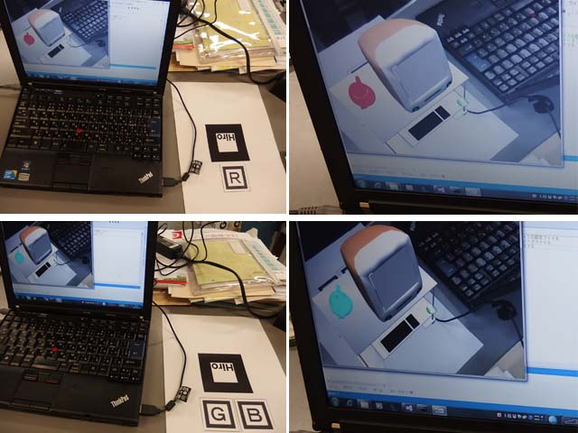

リサーチ
拡張現実（AR）の応用研究について
拡張現実（Augmented Reality）とは、カメラで撮影した映像にCGや音声、文字などの情報を重ねて表示することで現実の世界を拡張するメディア処理技術です。この技術は、たとえば映画やゲームといったエンタテイメント、カーナビや自動運転といった高度交通情報システム、遠隔医療や画像診断といった医療分野、遠隔教室やディジタル教材など教育分野など、情報メディア分野の中核をなす技術の一つです。当研究室では、このARを使ったゲームや情報表示システムの開発に取り組んでいます。図は複数のマーカを使って、WEBカメラの映像中にCGを表示し、ポットの色をマーカによって変えているところです。
